ZPush Documentation
Index
Introduction
ZPush is an Android application that allows you to transfer files from your smartphone to a server on
your network.
Unlike other Android apps, ZPush uses the approach of transmitting new or modified files to the server
only once.
This allows you to move the files on the server without them being retransferred by ZPush.
ZPush is primarily designed to automatically save e.g. photos from your smartphone to your private
server without manual interaction.
What can ZPush
- Automatically transfer directories and files from your smartphone to a server.
- Rename files during transfer so that the name matches your wishes.
- A connection is only established if the server is reachable.
- Scheduled or manual upload.
- For NAS-System wait time to wake up the NAS-System
- support for Android 7 till Android 16
- Multiple jobs for upload
- The following server interfaces are supported:
- SFTP
- Samba (SMB 2.0, SMB 2.1 and SMB 3.0)
- WebDAV
- Nextcloud
- PhotoPrism
Do you have suggestions for improvement, please contact me per email: (
matthias.zartmann@gmail.com)
Security of your data
- ZPush does not transmit any data to third parties!
- ZPush attaches great importance to your privacy. My software does not send any data without your
knowledge!
Need your help
I develop ZPush in my spare time and have released it for free. If you want to motivate me to continue
working on ZPush, you can do so in 2 minutes of your time by writing a nice 5-star review in the Play Store.
Good to know
Dynamic Mac Address
Android Wifi connections can have dynamic Mac addresses. This can cause problems when changing the
access point, so that the name resolution of the server does not work for a while. To avoid these
problems, deactivate the dynamic assignment of the MAC address in the Wifi configuration of the
connected Wifi network. Alternatively, you can also work with IP addresses in ZPush.
Problems with ZPush
You are already very close to solving the problem since you are reading this guide :-) But there
are always problems where you get stuck and if you think it's ZPush because other software
works, please contact me. On the "About ZPush" page there is an “Email to support” button that
you can use to send me an email with all the information I need to analyze the problem. The
information does not include passwords but server names and IP addresses.
Check the WiFi SSID
Many users have expressed their desire for ZPush to only run on a specific SSID.
Unfortunately, after much discussion with Google, I have to say that I cannot integrate this
feature
because it requires extremely high permissions.
I am working on an alternative,
but even access to MAC addresses remains denied to ZPush.
If anyone has an idea for identifying a network, please let me know.
The main page
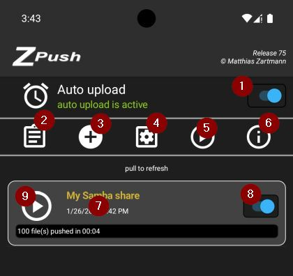
- Activate the background upload.
- ZPush upload new files from activated jobs in an interval and only when the server is reachable.
- Open the Log file.
- Add a new job.
- Configure ZPush.
- Run all activated jobs.
- Open the About page.
- This is a Job, tab to open job configuration.
- Activate job for run automatic.
- Run a single job.
The ZPush configuration
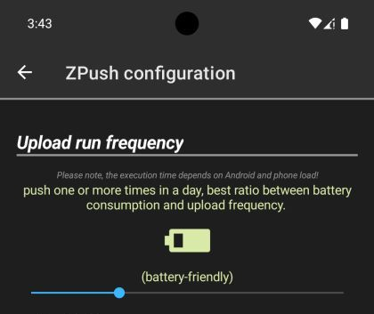
The upload frequency defines how often ZPush check all activated jobs for new files and upload this
files.
The android system decides itself when ZPush is executed, and therefore the following times are ony
approximate
values.
The left position of the slider suggests Android to start every 15 minutes, and the right position 10
hours.
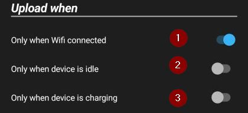
The scheduler only starts if these selected conditions are all fulfilled.
- Start the background upload only when a Wi-Fi is connected
- Start the background upload only when android detect that the device is idle
- Start the background upload only when the device is charging
Retries
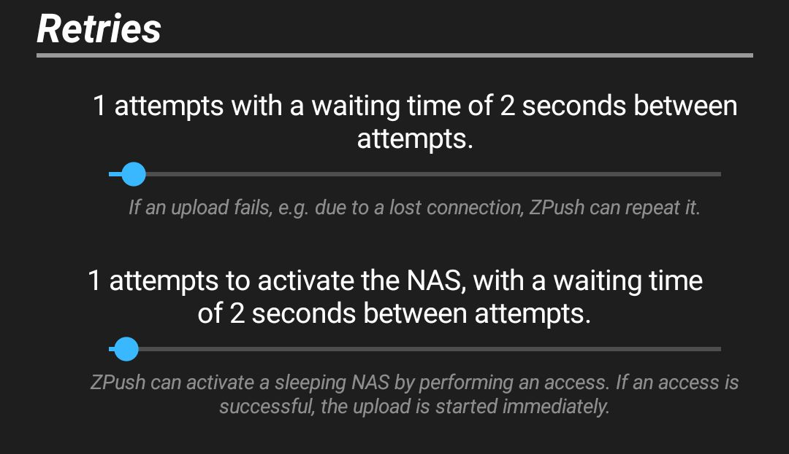
Here you specify how often ZPush attempts to repeat the failed operation before it aborts
with an error.
You can specify this first for all operations, that are executed during the upload.
For the spinup for the Nas you can set this in the second slider and only affects the Nas spinup.
Common
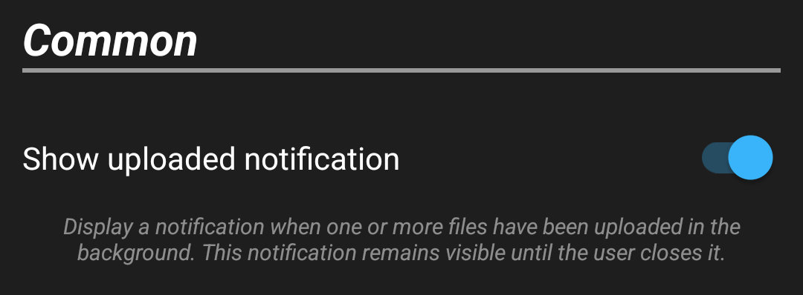
If this option is enabled and ZPush has uploaded files in the background,
a notification will appear and remain on the screen.
This is useful if you want to be notified when new files have been uploaded.
The notification appears only if at least one file has been uploaded.
Export/Import
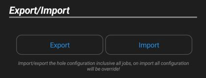
You can export all Job configurations to save this on your device.
The import, deletes all exists jobs and restores the jobs from the export.
Please note that the transfer history will also be reset at the time the export took place.
Edit Job
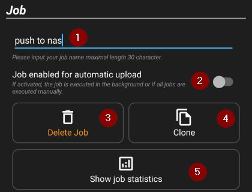
- Input here the name of the job
- Activate the job so that it is executed on automatic/manual start.
- Delete exists Job (only visible when edit a job)
- Clone this job and after this, the configuration shows the cloned job.
- The job statistics show you various statistical information.
Source
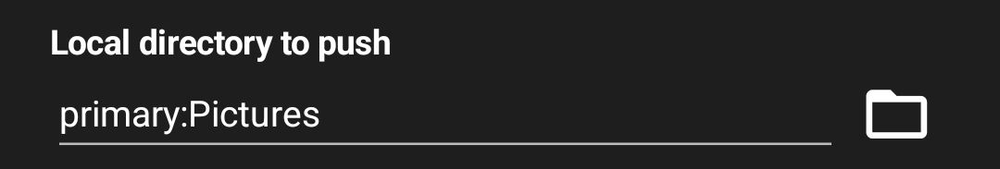
Tap here to open the directory picker and select a directory for upload.
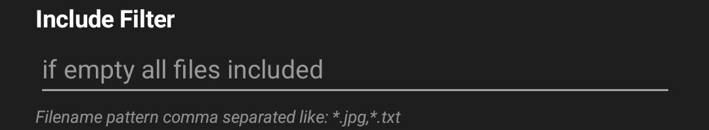
You can set include filter, all files match the pattern will be uploaded. Input a patter like:
"*.jpg,*.gif". Separate each pattern with a comma.
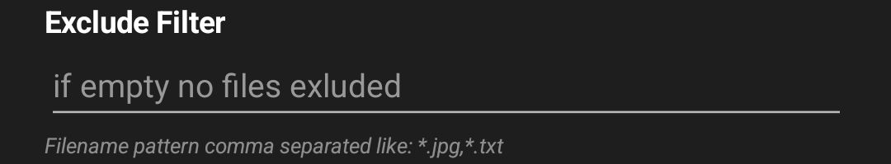
This is like "include filter" but exclude the files that match the patterns.
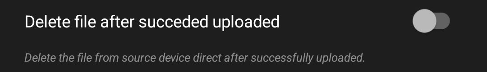
If a file uploaded successfully, ZPush delete this from the device.
Please note that the source file will be irretrievably deleted.
For your safety, only use this setting with the “compare checksum”
setting.
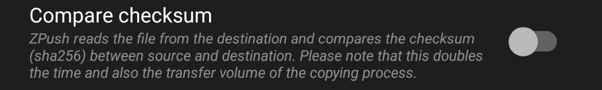
If activated, a checksum of the target file and source file is calculated and
compared. This ensures that the target file corresponds 100% to the source file.
Please note that double the amount of data is transferred when
activated.
Upload all files included all subfolder,
if enabled the target structure is hide.
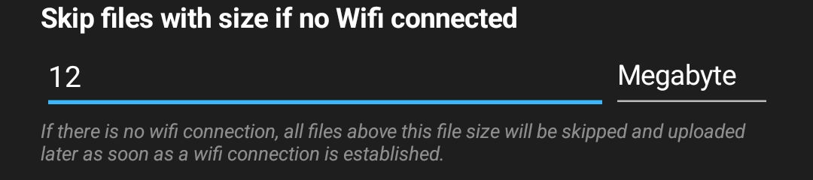
Skips files if they are larger than specified and no Wi-Fi is connected. If the job is
run again and
Wi-Fi is
available, the skipped files are transferred. This option is useful if you also transfer files via
the
mobile network when you are on the move, but prefer to transfer larger files via your Wi-Fi network
Opens the page for setting the starting point for the next transfer.
This makes it possible to skip files or transfer them again.
see: Job starting point
Target
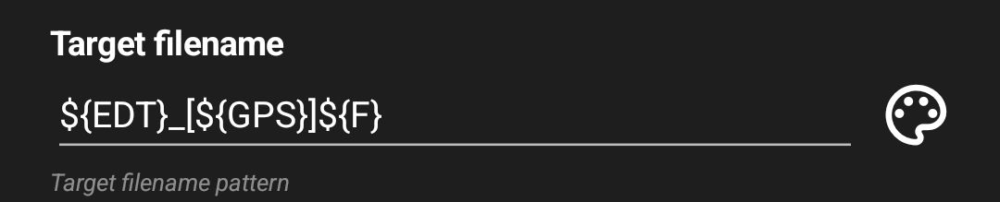
Defines the pattern how the target filename will be created. Tab in the icon on the
right to open the
designer.
ZPush reads exif information from your image file when copying (only .jpg and .jpeg
exif data is supported) and makes the information available in different variables. If no exif data
is found or if it is not a jpg file, the file system information is evaluated.
see: Filename pattern
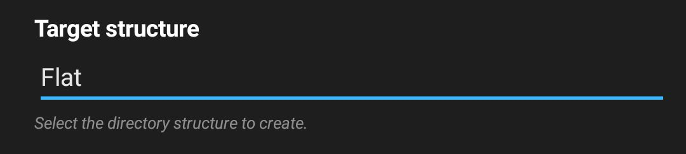
The target structure can be used to determine the type of files to be stored. This is
very useful if you want to store your images in a structured way.
Please note that the structure can only be set if the option “Include all
subdirectories and files” is not activated!
Follow target structures are availabel:
- Flat
- All files are store under the given path.
Example: /myPicture.jpg
- Create year/month directories
- With this structure, ZPush automatically creates subdirectories with the year and month when the
image was photographed or where the file was changed.
Example: /2025/05/myPicture.jpg
- Create year/month/day directories
- With this structure, ZPush automatically creates subdirectories with the year, month and day
when the image was photographed or where the file was changed.
Example: /2025/05/03/myPicture.jpg
- Create year-month directory
- With this structure, ZPush automatically creates one subdirectory with the year and month when
the image was photographed or where the file was changed.
Example: /2025-05/myPicture.jpg
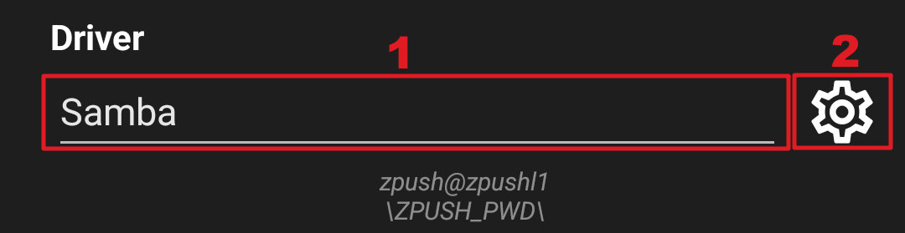
Select the driver depend on your target server.
- Tap here to select the driver.
- Tap here to configure the driver.
Follow driver are available:
- Samba
- This driver can you use if you want to upload to a Linux samba share.
This driver support the SMB protocol SMB 2.0, SMB 2.1 and SMB 3.0.
Since Microsoft has changed its company policy, I no longer officially support Windows. I no
longer have Windows on my personal computers either and recommend Linux.
- WebDAV
-
This is an http/https protocol to transfer files over a web server. ZPush supports streaming
for big uploads. I have tested this with Apache2 under Debian 13.
Supported http/https authentications are: Basic and Digest
- Nextcloud
- This protocol is equal like the WebDAV protocol but support big files and implement the
protocol extensions from Nextcloud.
- PhotoPrism
- For upload in PhotoPrism.
- SFtp (Secure File Transfer Protocol)
- This protocol is special for Linux server and use the ssh to transfer files.
Configure Samba driver
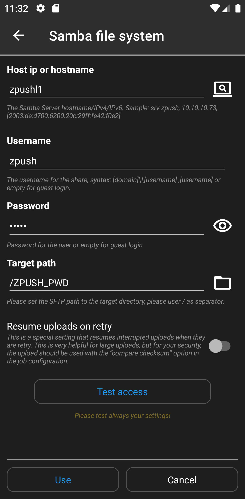
-
Host ip or hostname
Input here the server name or the IPv4 or IPv6 address and if the port deviating from the
standard you can append it by double point. If you have problems with the Name resolution,
please use the Ip
address or deactivate the dynamic Mac address on your device.
On the right-hand side, you can open the server picker and browse available servers in your
local network.
Samples:
- Ubuntu
- Ubuntu:443
- 192:168:178:55
- [2003:de:d71d:4600:20c:aaff:fe42:dde2]
- [2003:de:d71d:4600:20c:aaff:fe42:dde2]:443
-
Username
Input the username if you need an authentication. Leave empty for anonymous access.
-
Password
Input the right password for the given username.
-
Target Path
Input here the samba path like \Share\directory1\directory2 or only \ .
On the right-hand side, you can open the directory picker and select the destination path.
-
Resume upload on retry
This new feature allows uploads to resume from where they left off in the event of a connection
interruption. This is very helpful for very large uploads, but for security reasons should only
be used with the checksum function enabled.
-
Test access
This button test your setting and check if the server reachable and can access the selected
directory.
Please test always your settings!
Configure WebDav driver
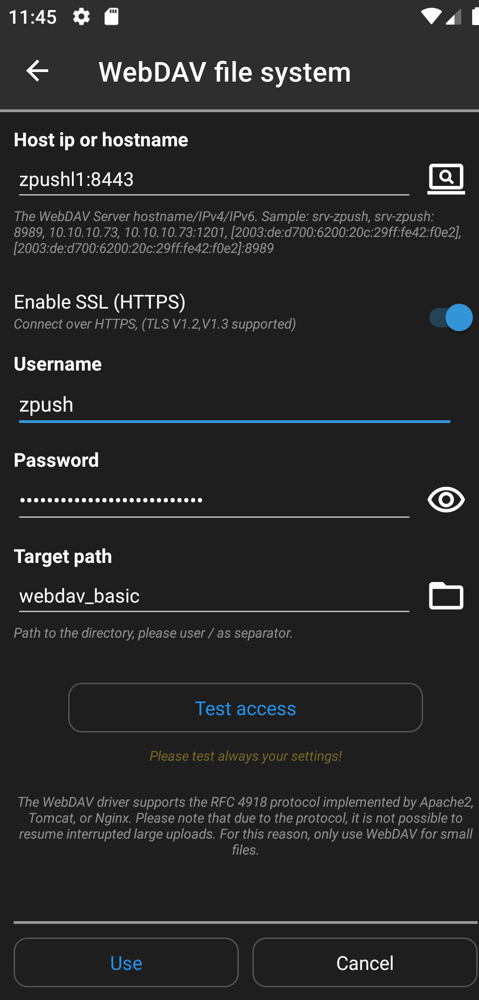
-
Host ip or hostname
Input here the server name or the IPv4 or IPv6 address and if the port deviating from the
standard you
can append it by double point. If you have problems with the Name resolution, please use the Ip
address or deactivate the dynamic Mac address on your device.
On the right-hand side, you can open the server picker and browse available servers in your
local network.
Samples:
- Ubuntu
- Ubuntu:443
- 192:168:178:55
- [2003:de:d71d:4600:20c:aaff:fe42:dde2]
- [2003:de:d71d:4600:20c:aaff:fe42:dde2]:443
-
Enable SSL (HTTPS)
You can enable SSL to communicate over https. Self singed certificates are accepted!
-
Username
Input the username if you need an authentication. Leave empty for anonymous access.
-
Password
Input the right password for the given username.
-
Target Path
Input here the WebDav path like /directory1/directory2/ if your Url is
https://zpushl1/directory1/directory2/.
On the right-hand side, you can open the directory picker and select the destination path, but
please first enter the root directory in the input field.
-
Test Access
This button test your setting and check if the server reachable and can access the selected
directory.
Please test always your settings!
Configure Nextcloud driver
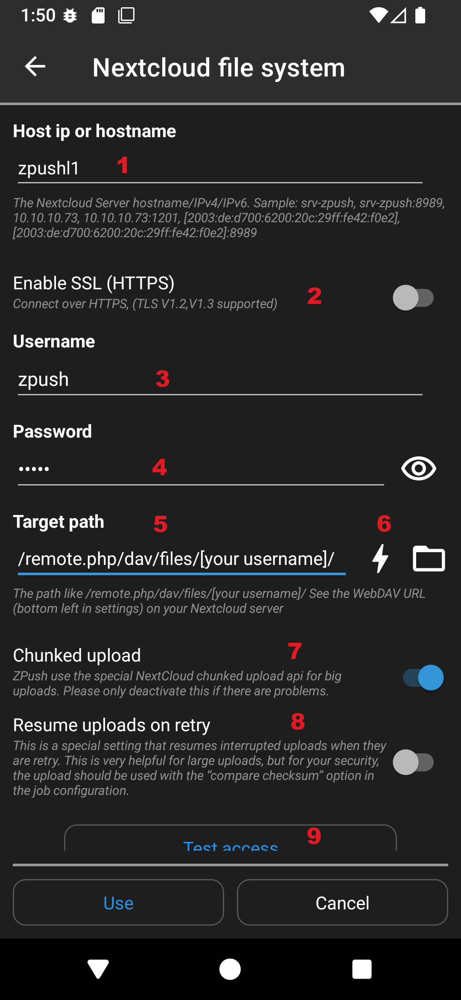
-
Host ip or hostname
Input here the server name or the IPv4 or IPv6 address and if the port deviating from the
standard you
can append it by double point. If you have problems with the Name resolution, please use the Ip
address or deactivate the dynamic Mac address on your device.
On the right-hand side, you can open the server picker and browse available servers in your
local network.
Samples:
- Ubuntu
- Ubuntu:443
- 192:168:178:55
- [2003:de:d71d:4600:20c:aaff:fe42:dde2]
- [2003:de:d71d:4600:20c:aaff:fe42:dde2]:443
-
Enable SSL (HTTPS)
You can enable SSL to communicate over https. Self singed certificates are accepted!
-
Username
Input the username from your nextcloud login.
-
Password
Input the password from yournextcloud login.
-
Target Path
Input here the Nextcloud upload API Path, the standard is /remote.php/dav/files/[User
username]/.
On the right-hand side, you can open the directory picker and select the destination path, but
please first enter the root directory in the input field.
- Tap here to generate the standard path with your username.
-
Chunked upload
Enable this feature to use Nextcloud's special function for larger uploads > 50MB. This allows
you to split the upload into chunks and thus handle even very large files.
-
Resume uploads on retry
This new feature allows uploads to resume from where they left off in the event of a connection
interruption. This is very helpful for very large uploads, but for security reasons should only
be used with the checksum function enabled.
-
Test access
This button test your setting and check if the server reachable and can access the selected
directory.
Please test always your settings!
Configure Sftp driver
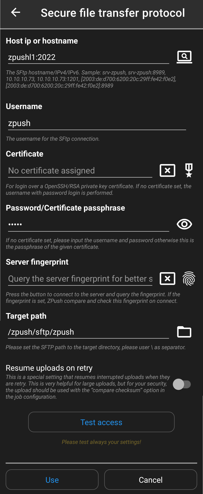
-
Host ip or hostname
Input here the server name or the IPv4 or IPv6 address and if the port deviating from the
standard you
can append it by double point. If you have problems with the Name resolution, please use the Ip
address or deactivate the dynamic Mac address on your device.
On the right-hand side, you can open the server picker and browse available servers in your
local network.
Samples:
- Ubuntu
- Ubuntu:443
- 192:168:178:55
- [2003:de:d71d:4600:20c:aaff:fe42:dde2]
- [2003:de:d71d:4600:20c:aaff:fe42:dde2]:443
-
Username
The username from the ssh login.
-
Certificate
If you want to log in using a certificate, you can select and save the private key here. ZPush
uses this private key and the user name to connect to the server. This function has been tested
with ed25519 and RSA keys.
The X icon on the right-hand side, clear the uploaded certificate and the medal icon open the
filebrowser to assing a new private key.
-
Password/Certificate passphrase
If you have not specified a certificate, you can enter the user's password here. If you are
working with a certificate, you can enter the passphrase used to encrypt the certificate.
-
Server Fingerprint
ZPush can verify the server's fingerprint during connection. If it does not match, ZPush
terminates. If the fingerprint is empty, no fingerprint verification is performed.
The X icon on the right-hand side, clear the server fingerprint and the fingerprint icon
determine the fingerprint of the server. Please note that all connection data must be specified.
-
Target Path
Input here the filesystem path from the root like /directory1/directory2/.
On the right-hand side, you can open the directory picker and select the destination path.
-
Resume uploads on retry
This new feature allows uploads to resume from where they left off in the event of a connection
interruption. This is very helpful for very large uploads, but for security reasons should only
be used with the checksum function enabled.
-
Test access
This button test your setting and check if the server reachable and can access the selected
directory.
Please test always your settings!
Generate certificate for use with ZPush
For these examples, you need a Linux computer with an OpenSSH client installed. If it is not installed,
you can install it for Debian systems, for example, with `sudo apt install openssh-client`.
Create certificate with ed25519 encryption
zpush@trixie: ssh-keygen -t ed25519 -f zpush_certificate_key
zpush@trixie: ssh-copy-id -i zpush_certificate_key.pub
[your-username]@[your server]
Create certificate with RSA encryption
zpush@trixie: ssh-keygen -t rsa -b 4096 -f
zpush_certificate_key
zpush@trixie: ssh-copy-id -i zpush_certificate_key.pub
[your-username]@[your server]
After that, copy the zpush_certificate_key file (private certificate key) to your phone and import this
in the Sftp driver configuration.
Configure PhotoPrism®
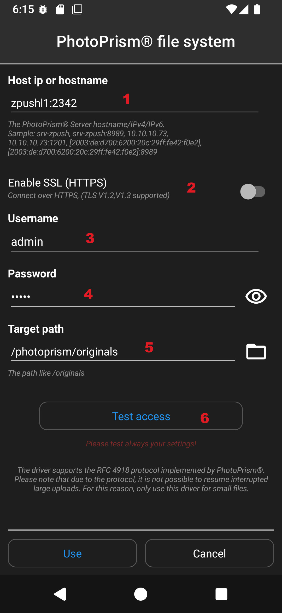
Server Picker
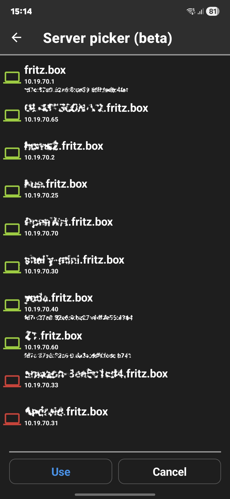
The server picker helps you find specific servers in your local network.
This picker only works if WiFi is turned on and you are connected to the network where your desired
server is located.
ZPush searches for servers in the DNS and checks whether they have a standard port open.
Unfortunately, pinging is blocked by Android.
Green means the server is available and a standard TCP port is open (ZPush checks the following ports:
22, 445, 80, 443, 3389).
Red means the server is not responding to the standard ports and it cannot be determined whether it is
running or still on the network.
After selecting a server and tapping “Use,” a selection will appear with host name, IPv4, and IPv6 ULA.
Please select what you would like to use in the host field. Please note that IP addresses are permanently
assigned to the server. If this is the case, IP addresses are preferable.
Job Starting point
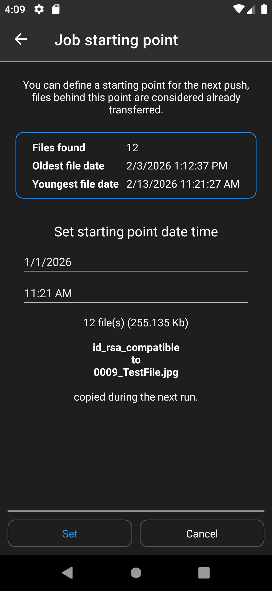
In this dialog, you can specify the starting point for the next upload.
You can also set the starting point to a date in the past to transfer files again.
Once you have selected the date, ZPush will only transfer files that are equal to or newer than the
selected date during the next upload.
The dialog also shows you which file ZPush will start with and how much data will be transferred.
Job Starting point
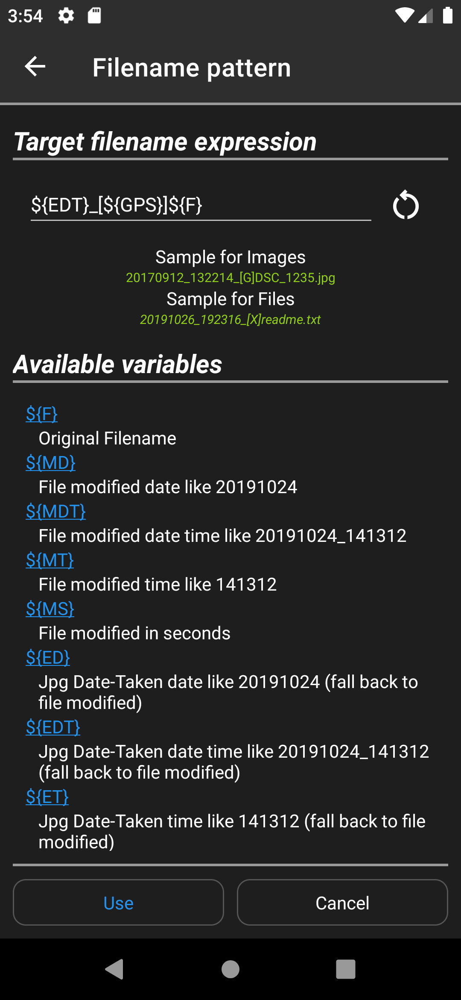
ZPush reads exif information from your image file when copying (only .jpg and .jpeg exif data is
supported) and makes the information available in different variables.
If no exif data is found or if it is not a jpg file, the file system information is evaluated.
You can customize the file name here to suit your needs, but the original file name must always be
included, otherwise ambiguities may arise.
MangentaCLOUD
ZPush works in conjunction with MangentaCLOUD and is
configured using the built-in “WebDAV” driver.
Step 1: Add a new device in MangentaCLOUD
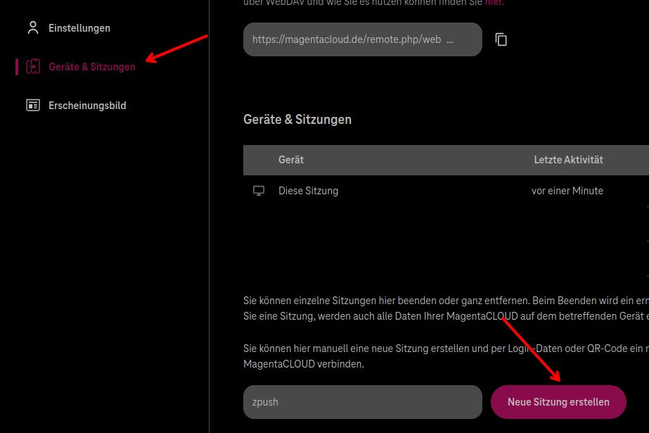
Step 2: Write down your username and password
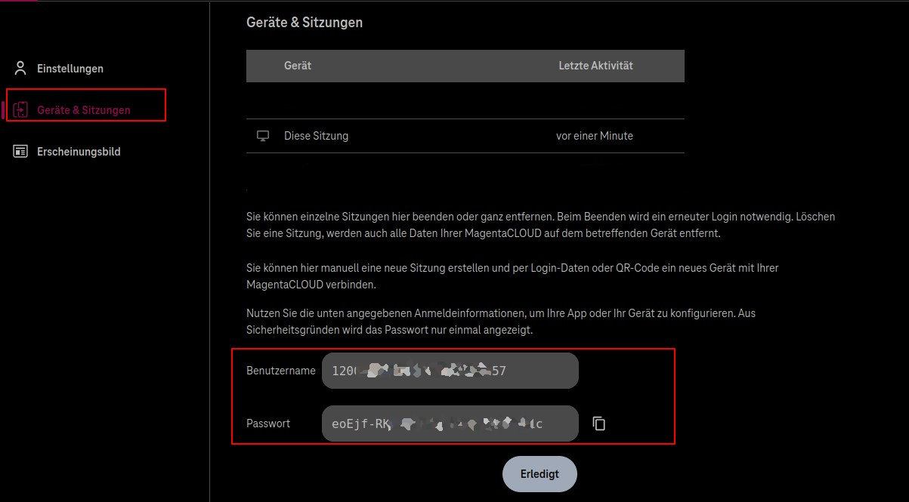
Step 3: Create a new ZPush job
Select WebDAV as the driver and configure the following settings.
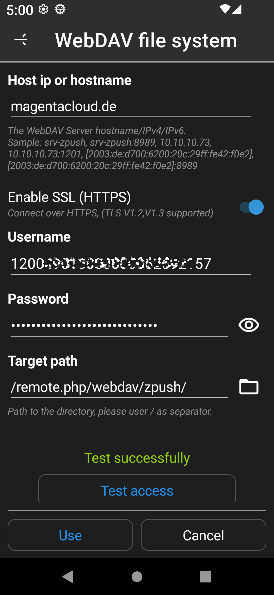
If you've set everything up correctly, the test should now work when you click “Test access.”